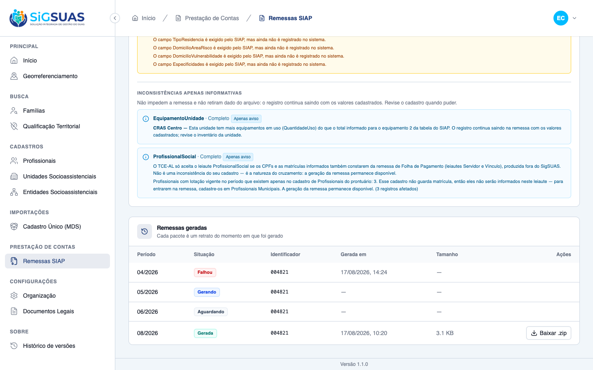
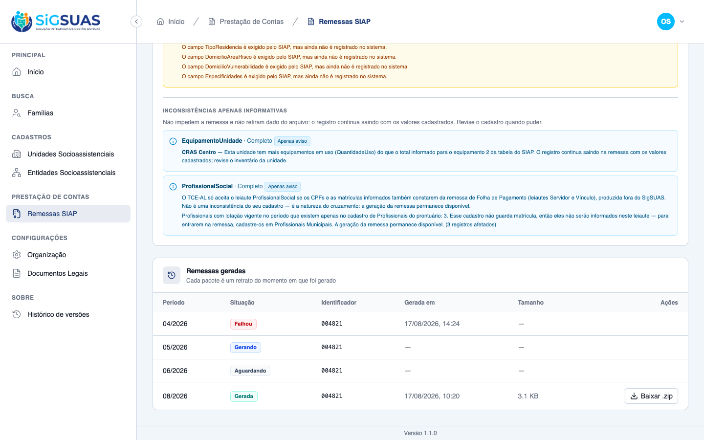
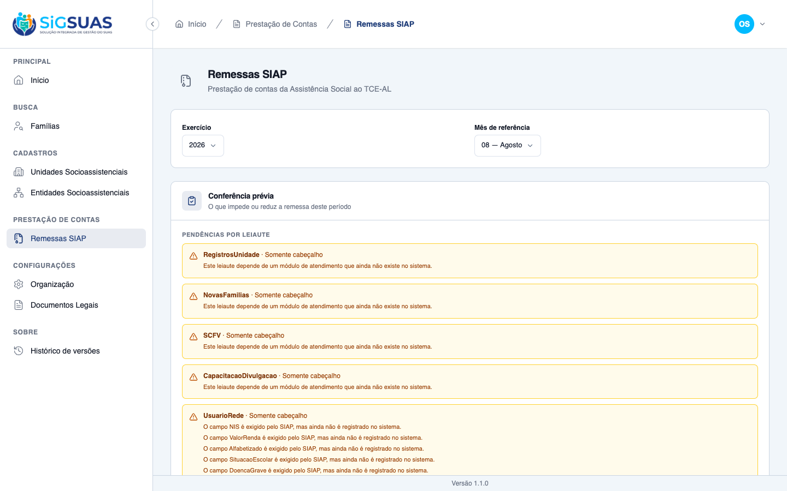

Treze critérios de aceite (CA01–CA13) demonstrados em três camadas: o CONTEÚDO real do .zip gerado (pacote/ — a lista dos 11 arquivos com contagem de registros e os 6 leiautes em branco na íntegra, evidência de primeira classe do CA01/CA02/CA03), payloads mascarados de cada cenário (payloads/*.json, gerados por harness Pest com gate LGPD na gravação) e a suíte automatizada (276 testes Siap na api + 1443 no client). A HU fechou as três lacunas da spec: RN01 (mês 1–12 — D03), RN09 (nome do pacote editável no download — D04/D06) e RN10 (o Operacional consulta o histórico e baixa — D02, corrigindo a suposição errada da etapa 02b da #10530). De brinde, a D03 removeu o min($month, 12) do ProfissionalSocialLayout — a ressalva registrada pela #10529 sobre a janela ambígua das referências 13/14 está FECHADA. O CA09 é a evidência central: o Operacional aparece VENDO a lista de remessas que a #10530 lhe negava — e sem a ação de gerar (D05).
| CA | Critério | Status |
|---|---|---|
| CA01 | Gerar sem pendências (happy path) — 11 leiautes, todos com CARDUG/exercício/mês | ATENDIDO · automatizado |
| CA02 | Leiautes fora do escopo entram em branco — evidência do CONTEÚDO do zip | ATENDIDO · automatizado |
| CA03 | Leiaute preenchível sem registro no período entra EM BRANCO, não ausente | ATENDIDO · automatizado |
| CA04 | Acompanhar e baixar — as quatro situações; download só em completed | ATENDIDO · navegador + automatizado |
| CA05 | Regerar preserva o histórico (RN07 — cada geração é um retrato) | ATENDIDO · automatizado |
| CA06 | Bloqueio por pendência impeditiva — 422 e NADA gravado | ATENDIDO · automatizado |
| CA07 | Bloqueio por falta do CARDUG — a mensagem aponta a Organização | ATENDIDO · automatizado |
| CA08 | Mês inválido (D03) — 13, 14 e 0 recusados; o pre-check recusa JUNTO | ATENDIDO · automatizado |
| CA09 | Operacional consulta e baixa (D02) — a correção da decisão errada da #10530 | ATENDIDO · navegador + automatizado |
| CA10 | Isolamento entre municípios — 404, não 403 | ATENDIDO · automatizado |
| CA11 | Falha na montagem — failed com motivo compreensível; pode repetir | ATENDIDO · automatizado |
| CA12 | Nome do pacote no download (D04/RN09) — sugerido, editável, NUNCA persistido | ATENDIDO · automatizado |
| CA13 | Nome malicioso neutralizado — traversal e header injection (R2) | ATENDIDO · automatizado |
Critério (Gherkin): Dado que sou Master, os parâmetros TCE/AL estão preenchidos E a conferência de 08/2026 não aponta pendência impeditiva, quando eu solicitar a geração para 08/2026, então a remessa nasce com status pending e ao concluir tem os 11 leiautes, todos com o CARDUG, exercício 2026 e mês 8.
Como foi testado: Harness Pest semeia CARDUG 004821, unidade, entidade, equipamento, estrutura e profissional completos, e chama POST /siap-remittances (2026/08). O pacote REAL é aberto: pacote/00-lista-dos-11-arquivos.txt lista os 11 arquivos com bytes, contagem de registros e a tríade Codigo/Exercicio/Mes conferida em CADA um. Payload íntegro (201 pending → show completed + outcomes persistidos) em payloads/CA01-happy-path.json. Teste dedicado (suíte): generates a zip with all 11 layouts, including the ones without movement.
Evidência por cobertura automatizada — ver Anexo.
Critério (Gherkin): Dado um pacote gerado para 08/2026, quando eu abrir o .zip, então UnidadeSocial, EntidadeSocial, EquipamentoUnidade, EstruturaUnidadeSocial e ProfissionalSocial trazem registros E RegistrosUnidade, SCFV, CapacitacaoDivulgacao, NovasFamilias, UsuarioRede e Familia trazem só o cabeçalho, sem nenhum registro.
Como foi testado: Evidência de primeira classe: o CONTEÚDO do pacote, não o banco. payloads/CA02-conteudo-do-zip.json traz a contagem de registros dos 5 preenchidos (≥1 cada) e dos 6 em branco (0 cada); os 6 XMLs em branco estão NA ÍNTEGRA em pacote/*.xml — só Codigo/Exercicio/Mes, nenhuma tag de registro (RN04: em branco ≠ preenchido com zeros). A linha do ProfissionalSocial incluída no payload está MASCARADA (390.***.***-05 / 'Maria S. L.').
Evidência por cobertura automatizada — ver Anexo.
Critério (Gherkin): Dado que o município não tem nenhuma entidade cadastrada, quando o pacote for gerado, então EntidadeSocial é entregue em branco — presente no zip, não ausente.
Como foi testado: Segundo tenant semeado SEM entidade (só unidade completa). O pacote gerado traz EntidadeSocial.xml — íntegra em pacote/CA03-EntidadeSocial-em-branco.xml: cabeçalho com o CARDUG e NENHUMA tag <EntidadeSocial>. Payload em payloads/CA03-leiaute-em-branco.json: os 11 nomes no zip + outcome = header_only persistido.
Evidência por cobertura automatizada — ver Anexo.
Critério (Gherkin): Dado que solicitei a geração e saí da tela, quando eu retornar à relação de remessas, então vejo a situação atual E o download só é oferecido quando for completed.
Como foi testado: Payload em payloads/CA04-quatro-situacoes.json: a lista devolve as quatro situações (pending, processing, failed, completed, com status_label pt-BR); o download do pending responde 409 e o do completed responde 200 com o Content-Disposition. Na UI, a tabela exibe um badge por situação e a ação 'Baixar .zip' só aparece na linha completed (teste do client: CA04: exibe as quatro situações e só oferece o download no completed).

Critério (Gherkin): Dado um pacote já gerado para 08/2026, quando eu gerar novamente a mesma referência, então nasce um novo pacote E o anterior continua listado, com sua data e seu solicitante, sem ser substituído.
Como foi testado: Payload em payloads/CA05-regerar-preserva-historico.json: duas gerações de 08/2026 (5 minutos de intervalo) → duas linhas na lista, cada uma com created_at e requested_by_label próprios; o file_path e o file_checksum da primeira estão IDÊNTICOS antes/depois. Não há unique em (tenant, exercise, reference_month) DE PROPÓSITO — unicidade apagaria histórico (RN07).
Evidência por cobertura automatizada — ver Anexo.
Critério (Gherkin): Dado que a conferência de 08/2026 aponta pendência impeditiva, quando eu tentar gerar, então recebo 422, nenhum arquivo é produzido E assertDatabaseCount('siap_remittances', 0).
Como foi testado: Unidade sem NumeroMDS (pendência impeditiva da #10370). Payload em payloads/CA06-pendencia-impeditiva.json: 422 com a contagem de cadastros a corrigir, siap_remittances com ZERO linhas, nenhum job despachado, nenhum arquivo no storage. Teste dedicado: refuses the generation when a unit has no MDS number (CA07 da #10370) + SiapGenerationGuard reavaliado DENTRO do job (TOCTOU).
Evidência por cobertura automatizada — ver Anexo.
Critério (Gherkin): Dado que o código da Unidade Gestora não está informado, quando eu tentar gerar qualquer referência, então recebo 422 com a mensagem de informá-lo nos dados da Organização.
Como foi testado: Payload em payloads/CA07-cardug-ausente.json: cardug_identifier nulo → 422 com erro de validação em cardug_identifier e a redação pt-BR 'A remessa SIAP não pode ser gerada: informe o identificador da Unidade Gestora (CARDUG) nos parâmetros TCE/AL.' Zero linhas gravadas. Teste dedicado: refuses the generation when the identifier is missing (CA06 da #10367) — inclusive para o identificador legado fora do formato.
Evidência por cobertura automatizada — ver Anexo.
Critério (Gherkin): Dado que sou Master, quando eu informar mês 13 (ou 14, ou 0), então recebo 422 informando que a remessa aceita apenas meses de 1 a 12.
Como foi testado: Payload em payloads/CA08-mes-invalido.json: store com mês 13 (Encerramento Contábil), 14 (Restos a Pagar) e 0 → 422 com a mensagem própria; o pre-check com mês 13 recusa JUNTO (R4 — SiapReferenceRequest compartilhado); mês 12, o último válido, segue aceito (201). No client, o seletor de período NÃO oferece mais 13/14 (grupo 'Períodos especiais' removido — teste oferece os 12 meses do calendário e não oferece 13 nem 14). Testes api: refuses reference months outside 1 to 12 (CA08/D03) ×3 + also refuses month 13 in the pre-check (R4).
Evidência por cobertura automatizada — ver Anexo.
Critério (Gherkin): Dado que sou Operacional do Tenant, quando eu abrir a tela de remessas SIAP, então vejo o histórico de pacotes gerados E consigo baixar um pacote completed E a ação de gerar NÃO está disponível para mim.
Como foi testado: A evidência mais importante desta HU. Na etapa 02b da #10530 supusemos que o histórico era 'ato de gestão' e negamos siap-remittances.index ao Operacional — a RN10 do PO diz o contrário, e esta HU corrige (ver seção 'Correção da #10530'). Payload em payloads/CA09-operacional.json: a matriz de permissões REAL do papel operador (index/show/download/pre-check = true, store = false — via OPERATOR_GRANTED_PERMISSIONS, mecanismo automático, não favor do Master), o index respondendo 200 COM a lista, o show, o download 200 com Content-Disposition e o store respondendo 403 sem gravar nada (D05). A captura mostra o Operacional NO NAVEGADOR vendo a lista de remessas — exatamente o que ele não via — sem a ação de gerar. Testes: lets the tenant Operacional list, open and download — never generate (api) + CA09/CA09b em RemessasSiapPage.test.ts (client).


Critério (Gherkin): Dado que sou usuário do município A, quando eu consultar a relação de remessas, então vejo apenas pacotes de A E acessar um pacote de B devolve 404, não 403.
Como foi testado: Payload em payloads/CA10-isolamento.json: municípios A e B com remessa cada; o index de A traz SÓ a de A; show e download do pacote de B devolvem 404 — o recurso não existe para quem não é dono (403 confirmaria a existência). Defesa em profundidade: BelongsToTenant (Global Scope) + EnsureTenantScope. Teste dedicado: never lists or downloads a remittance from another tenant + suíte tests/Feature/TenantIsolation.
Evidência por cobertura automatizada — ver Anexo.
Critério (Gherkin): Dado que a montagem foi interrompida por um problema, quando eu consultar a solicitação, então a situação é failed com motivo em linguagem compreensível E posso solicitar novamente a mesma referência.
Como foi testado: Payload em payloads/CA11-falha-e-nova-tentativa.json: geração criada, identificador removido entre o pedido e o worker (TOCTOU — o guard roda DE NOVO dentro do job), a montagem falha → status = failed com error_message GENÉRICO ('Não foi possível gerar a remessa. A equipe técnica foi notificada.' — o detalhe da exceção vai só ao log privado, porque pode carregar PII dos leiautes de pessoa). Corrigido o cadastro, a MESMA referência aceita nova solicitação (201) — failed não conta como remessa ativa.
Evidência por cobertura automatizada — ver Anexo.
Critério (Gherkin): Dado um pacote completed de 08/2026, quando eu baixar sem informar nome, então o arquivo vem com o nome sugerido pelo sistema; quando eu baixar informando 'remessa-agosto', então o arquivo vem como 'remessa-agosto.zip' E o file_path armazenado NÃO muda (D06).
Como foi testado: Payload em payloads/CA12-nome-do-download.json: o Resource expõe suggested_file_name = remessa-assistencia-social-maceio-2026-08.zip (município + exercício + mês — igual ao exemplo da spec §9); download sem nome → Content-Disposition com o sugerido; com ?file_name=remessa-agosto → remessa-agosto.zip (extensão forçada); e o file_path no banco está IDÊNTICO antes/depois — o nome é do download, nunca do retrato (D06/RN07). No client, o Popover pré-preenche com o sugerido e só envia file_name se a pessoa alterar (testes CA12/CA12b da tabela e do composable — o template de nome que o front montava foi REMOVIDO).
Evidência por cobertura automatizada — ver Anexo.
Critério (Gherkin): Dado um pacote completed, quando eu pedir o download com nome '../../etc/passwd', então o nome é sanitizado, o arquivo entregue é o pacote correto E nenhum caminho fora do storage é alcançado.
Como foi testado: Comportamento de servidor — evidenciado por teste, não por captura. Payload em payloads/CA13-nome-malicioso.json: ../../etc/passwd vira passwd.zip e o CONTEÚDO entregue é o pacote (não um arquivo alcançado pela travessia; storage idêntico antes/depois); remessa\r\nX-Evil: 1 não leva CRLF ao Content-Disposition e nenhum header X-Evil nasce; 300 caracteres são capados em ≤120 com .zip; file_name[]= (array) não derruba — cai no sugerido, nunca em 500. Sanitizador SiapDownloadFileName: basename + Str::ascii + allowlist [A-Za-z0-9._-], coberto por 16 testes de unidade.
Evidência por cobertura automatizada — ver Anexo.
PASS Tests\Unit\Services\Siap\SiapDomainMapTest
✓ it inverts Parda and Amarela between the eSUAS and SIAP scales 0.01s
✓ it keeps the race colors that coincide in both scales
✓ it returns null for a race color without counterpart
✓ it maps social unit types to the SIAP classification
✓ it refuses to translate a unit status the SIAP does not define
✓ it derives the extinction status from the end date against the exer… 0.01s
✓ it lets the derivation win over the code chosen in the lookup (D04)
✓ it turns an extinct unit without a usable end date into a pendency (D05)
✓ it ignores the end date for statuses that are not extinction
✓ it only translates the entity status that has a safe counterpart
✓ it translates the paralysed entity added by the HU #10371 (CA05d)
✓ it derives the entity extinction status from the end date against the exercise (RN08)
✓ it turns an extinct entity without a usable end date into a pendency (D08)
✓ it keeps the four original cadastral statuses out of the SIAP scale (CA05e / D03)
✓ it ignores the end date for the entity in activity
✓ it collapses the four SUAS participation types into the three of SIAP
✓ it maps the contract modality to the SIAP scale (HU #10369 / D06)
✓ it refuses to translate a contract modality outside the SIAP scale
✓ it maps kinship to the family position scale
✓ it leaves the ambiguous education level unmapped
✓ it maps booleans to the SIM/NAO pair
✓ it strips the zero padding only for the auxiliary tables
✓ it maps the 14 equipment types of the SIAP Table 35 (RN04)
✓ it refuses an equipment code outside the SIAP Table 35 (RN04)
✓ it keeps paddedCode permissive where unitEquipment is strict (D09)
✓ it maps the 21 structures of the SIAP Table 36 (RN04)
✓ it refuses a structure code outside the SIAP Table 36 (RN04)
✓ it keeps paddedCode permissive where unitStructure is strict (D04)
✓ it refuses a numeric value with a size different from the exact one
✓ it never sanitizes a non numeric value to make it fit
✓ it flags truncation instead of cutting text in silence
✓ it formats dates in ISO and decimals with two places
✓ it registers exactly the 11 layouts of the SIAP social assistance section
✓ it puts UnidadeSocial first, since 8 other layouts depend on it
✓ it names every file after its layout, as the Manual requires
PASS Tests\Unit\Siap\SiapDownloadFileNameTest
✓ it keeps only the last path segment, killing the traversal (CA13) 0.13s
✓ it never lets CR, LF or other control characters survive (CA13) 0.01s
✓ it transliterates unicode and applies the allowlist 0.01s
✓ it keeps names that are already clean untouched 0.01s
✓ it forces exactly one .zip extension 0.01s
✓ it falls back to the suggested name when nothing usable remains (CA… 0.01s
✓ it falls back to the suggested name when nothing usable remains (CA… 0.01s
✓ it falls back to the suggested name when nothing usable remains (CA… 0.01s
✓ it falls back to the suggested name when nothing usable remains (CA… 0.01s
✓ it falls back to the suggested name when nothing usable remains (CA… 0.01s
✓ it falls back to the suggested name when nothing usable remains (CA… 0.01s
✓ it never returns an empty name, even against a hostile fallback 0.01s
✓ it caps the file name at 120 characters, extension included (CA13b) 0.01s
✓ it builds the suggestion from municipality, exercise and month 0.01s
✓ it falls back to the stored file name when the tenant has no usable… 0.01s
✓ it still suggests a name when there is no stored file yet 0.01s
PASS Tests\Unit\Siap\SiapSubjectLabelResolverTest
✓ it resolves the three tenant subject types in one query each (R2) 0.35s
✓ it dedupes repeated subject uuids before querying 0.01s
✓ it ignores an unknown subject type without breaking 0.01s
✓ it leaves an orphan uuid out of the map instead of failing 0.01s
✓ it leaves a soft deleted record out of the map 0.01s
✓ it never resolves a label that belongs to another tenant (CA09) 0.01s
PASS Tests\Feature\Api\SiapRemittanceGenerationTest
✓ it refuses the generation when the identifier is missing (CA06) 0.06s
✓ it refuses the generation for a legacy identifier outside the TCE-A… 0.02s
✓ it creates the remittance and dispatches the job when the identifie… 0.02s
✓ it generates a zip with all 11 layouts, including the ones without… 0.04s
✓ it emits the service agreement and the operating status as independ… 0.04s
✓ it emits the informed service agreement as SIM (CA08b) 0.04s
✓ it refuses the generation when the service agreement was never info… 0.03s
✓ it emits the unit address in the Manual order, with street number a… 0.03s
✓ it brings every unit of the municipality with the seven fields of t… 0.05s
✓ it keeps the paralysed unit inside the remittance (CA02) 0.04s
✓ it emits the unit extinct within the reference exercise as 3 (CA03) 0.04s
✓ it emits the unit extinct in a previous exercise as 4 (CA04) 0.03s
✓ it lets the end date override the status code chosen in the lookup… 0.03s
✓ it turns the extinct unit without a usable end date into a blocking… 0.03s
✓ it blocks the remittance while an inactive unit has no SIAP counter… 0.02s
✓ it translates the unit classification to the SIAP domain (CA05) 0.04s
✓ it suppresses the reference point first and keeps the complement (C… 0.03s
✓ it also suppresses the complement when the reference point is not e… 0.03s
✓ it never lets the address exceed 255 characters, not even in the wo… 0.04s
✓ it delivers the layout with the header only when there is no unit (… 0.03s
✓ it contains exclusively the units of my municipality (CA11) 0.04s
✓ it leaves the soft-deleted unit out of the remittance 0.03s
✓ it records the layout outcome of a layout without movement 0.03s
✓ it re-evaluates the block inside the job (TOCTOU) 0.04s
✓ it refuses the generation when a unit has no MDS number (CA07) 0.02s
✓ it refuses the generation when the unit classification is outside t… 0.02s
✓ it refuses the generation when the unit address has no postal code… 0.03s
✓ it counts municipalities, not fields: one unit missing two values i… 0.02s
✓ it keeps the unit block with its own message alongside the new enti… 0.03s
✓ it re-evaluates the unit block inside the job (D07/TOCTOU) 0.03s
✓ it refuses a second generation while one is still running 0.03s
✓ it never lists or downloads a remittance from another tenant 0.02s
✓ it refuses the download while the remittance is not completed 0.02s
✓ it brings every entity of the municipality with the seventeen field… 0.05s
✓ it keeps the entity without foundation date and head office CNPJ in… 0.04s
✓ it emits the declared service agreement regardless of the contract… 0.04s
✓ it emits the yes or no indicators as 1 and 2 (CA04) 0.03s
✓ it emits the entity extinct within the reference exercise as 3 (CA0… 0.03s
✓ it emits the entity extinct in a previous exercise as 4 (CA05b) 0.04s
✓ it turns the extinct entity without a usable end date into a blocki… 0.08s
✓ it emits the paralysed entity as 2 (CA05d) 0.09s
✓ it keeps the cadastral statuses without a SIAP counterpart as block… 0.21s
✓ it emits the contract amount with two decimal places and a dot sepa… 0.13s
✓ it delivers the entity layout with the header only when there is no… 0.09s
✓ it contains exclusively the entities of my municipality (CA11) 0.05s
✓ it keeps the soft deleted entity out of the file (RN01 — regressão) 0.06s
✓ it emits the entity address in the Manual order, ending with the mu… 0.06s
✓ it suppresses the entity reference point first and keeps the comple… 0.04s
✓ it also suppresses the entity complement when the reference point i… 0.04s
✓ it never lets the entity address exceed 255 characters, not even in… 0.05s
✓ it refuses the generation when an entity has no CNEAS number (CA06) 0.06s
✓ it refuses the generation when an entity has no e-mail (CA07) 0.06s
✓ it refuses the generation when an entity has no contract amount (CA… 0.07s
✓ it does not block the remittance when the contract amount is zero (… 0.17s
✓ it counts entities, not fields: one entity missing two values is on… 0.04s
✓ it evaluates the CARDUG before the entity records 0.03s
✓ it re-evaluates the entity block inside the job (TOCTOU) 0.18s
✓ it generates the remittance when every entity and unit is complete 0.06s
✓ it never carries the entity name, CNPJ or e-mail into the entity bl… 0.05s
✓ it brings the inventory of every unit into the layout (CA01) 0.06s
✓ it consolidates distinct purchases of the same equipment into one r… 0.14s
✓ it emits the equipment without a purchase date and reports nothing… 0.18s
✓ it keeps the only informed purchase date after consolidating (CA04) 0.08s
✓ it keeps the row in the file when the in-use quantity exceeds the t… 0.08s
✓ it omits the equipment with zero total quantity, without any penden… 0.07s
✓ it omits the zeroed row but still reports the contradiction (CA07b) 0.18s
✓ it reports nothing for a unit without any equipment (CA08) 0.12s
✓ it delivers the layout with header only when no unit has equipment… 0.09s
✓ it contains exclusively the equipment of my municipality (CA10) 0.08s
✓ it keeps emitting an equipment type that was deactivated in the glo… 0.10s
✓ it refuses the generation when an equipment code is outside Table 3… 0.04s
✓ it refuses the generation for a non numeric equipment code (CA05b) 0.11s
✓ it points the equipment refusal to the Global Administration Panel… 0.06s
✓ it counts equipment codes, not links: the same code in two units is… 0.06s
✓ it does not block a municipality for an invalid code it does not us… 0.10s
✓ it keeps the inventory contradiction informative after the block (D… 0.10s
✓ it re-evaluates the equipment block inside the job (TOCTOU) 0.12s
✓ it evaluates the CARDUG, the unit and the entity before the equipme… 0.05s
✓ it keeps the unit and entity blocks with their own messages (não-re… 0.05s
✓ it generates the remittance when every equipment code is inside Tab… 0.20s
✓ it brings every structure of every unit into the layout (CA01) 0.16s
✓ it refuses the generation when a structure code is outside Table 36… 0.05s
✓ it refuses the generation when a structure code is outside Table 36… 0.07s
✓ it refuses the generation when a structure code is outside Table 36… 0.07s
✓ it refuses the generation for a non numeric structure code (CA02b) 0.03s
✓ it never drops a linked structure in silence anymore (RN04d) 0.03s
✓ it offers the two ways out in the structure refusal (CA03c) 0.04s
✓ it counts structure codes, not links: the same code in two units is… 0.07s
✓ it keeps emitting a structure whose lookup item was deactivated (CA… 0.10s
✓ it does not filter out a school-profile structure (CA03b) 0.09s
✓ it reports nothing for a unit without any structure (CA04) 0.07s
✓ it delivers the layout with header only when no unit has a structur… 0.06s
✓ it contains exclusively the structures of my municipality (CA06) 0.12s
✓ it does not block a municipality for a structure code it does not u… 0.13s
✓ it re-evaluates the structure block inside the job (TOCTOU) 0.06s
✓ it evaluates the professional block last, after the structure one 0.09s
✓ it generates the remittance when every structure code is inside Tab… 0.11s
✓ it brings every professional assigned in the reference month into t… 0.24s
✓ it emits one line per unit for a professional assigned to two units… 0.20s
✓ it includes assignments that started or ended in the middle of the… 0.13s
✓ it leaves out assignments that ended before or started after the mo… 0.13s
✓ it keeps a professional inactivated after the reference month in th… 0.15s
✓ it leaves a soft deleted professional out of the layout without a p… 0.12s
✓ it reports nothing for a professional without any assignment (CA07) 0.09s
✓ it delivers the layout with header only when nobody is assigned (CA… 0.07s
✓ it contains exclusively the professionals of my municipality (CA11) 0.17s
✓ it emits the registration number as is and never sanitizes it (D05) 0.09s
✓ it refuses the generation when an assigned professional has no regi… 0.08s
✓ it refuses a malformed registration number without transforming it… 0.07s
✓ it refuses a malformed registration number without transforming it… 0.12s
✓ it refuses the generation when the assigned professional has no usa… 0.09s
✓ it refuses the generation when the assigned professional has no usa… 0.05s
✓ it counts assignments, not pendencies, in the professional refusal 0.06s
✓ it re-evaluates the professional block inside the job (TOCTOU) 0.06s
✓ it refuses reference months outside 1 to 12 (CA08/D03) with dataset… 0.03s
✓ it refuses reference months outside 1 to 12 (CA08/D03) with dataset… 0.04s
✓ it refuses reference months outside 1 to 12 (CA08/D03) with dataset… 0.13s
✓ it says the remittance only accepts months 1 to 12 (CA08b) 0.05s
✓ it still accepts month 12, the last valid one (CA08/D03) 0.06s
✓ it also refuses month 13 in the pre-check (R4) 0.03s
✓ it lets the tenant Operacional list, open and download — never gene… 2.27s
✓ it downloads with the suggested name by default and honours the cho… 0.09s
✓ it exposes the suggested file name in the resource (RN09) 0.76s
✓ it neutralises path traversal in the download name (CA13) 0.05s
✓ it never lets CRLF reach the Content-Disposition header (CA13) 0.04s
✓ it falls back to the suggested name when the chosen one is unusable… 0.05s
✓ it falls back to the suggested name when the chosen one is unusable… 0.05s
✓ it caps an oversized chosen name instead of failing (CA13b) 0.04s
✓ it ignores a non-string file_name instead of failing (CA13b) 0.07s
PASS Tests\Feature\Api\SiapRemittancePreCheckTest
✓ it separates the blocking identifier pendency from the per-layout o… 0.15s
✓ it states that the identifier pendency blocks the entire remittance… 0.07s
✓ it still lists every layout while the remittance is blocked (CA06) 0.08s
✓ it marks per-layout pendencies as non blocking 0.15s
✓ it reports a required field that has no source in the system 0.05s
✓ it does not persist anything during the pre-check 0.04s
✓ it releases the generation when the identifier is valid 0.07s
✓ it counts records only from the active tenant 0.13s
✓ it names the entity whose service agreement was never informed (CA0… 0.05s
✓ it shows the incomplete entity pendency in the blocking zone AND in… 0.12s
✓ it counts the promoted entity pendency only once (CA12b) 0.05s
✓ it keeps record_incomplete and domain_unmapped apart after the prom… 0.10s
✓ it carries the entity legal name as subject_label but never the CNP… 0.04s
✓ it drops the pendency as soon as the municipality informs the value… 0.05s
✓ it turns a contract modality outside the SIAP scale into a pendency… 0.07s
✓ it stops reporting EntidadeSocial as a layout without data source 0.08s
✓ it shows the incomplete unit pendency in the blocking zone AND in t… 0.10s
✓ it counts the promoted pendency only once (D08b) 0.09s
✓ it sends the unmapped unit classification to the Global Panel (CA08… 0.10s
✓ it names the unit without postal code by subject_label, never by ad… 0.10s
✓ it keeps the CARDUG pendency blocking alongside the unit ones (não-… 0.09s
✓ it releases the pre-check as soon as every unit is complete (happy… 0.12s
✓ it rejects an invalid reference month 0.08s
✓ it refuses the accounting references 13 and 14 since D03 (HU #10531… 0.10s
✓ it refuses the accounting references 13 and 14 since D03 (HU #10531… 0.05s
✓ it reports the inventory contradiction without blocking the generat… 0.10s
✓ it evaluates the contradiction over the consolidated value, not per… 0.08s
✓ it emits one informative pendency per consolidated pair, not per pu… 0.11s
✓ it does not turn the layout partial because of an informative pende… 0.07s
✓ it counts the informative pendency apart from the blocking and layo… 0.08s
✓ it still marks the layout partial for a pendency that removes a rec… 0.10s
✓ it shows the equipment code pendency in the blocking zone AND in th… 0.11s
✓ it blocks the pre-check for a non numeric equipment code as well (C… 0.11s
✓ it names the offending code and the Global Panel in the equipment p… 0.07s
✓ it counts the promoted equipment pendency only once 0.04s
✓ it keeps the informative pendency out of the blocking zone (D05) 0.05s
✓ it still releases the generation when only the inventory is contrad… 0.09s
✓ it shows the structure code pendency in the blocking zone AND in th… 0.07s
✓ it blocks the pre-check for a non numeric structure code as well (C… 0.07s
✓ it offers the two ways out in the structure pendency (CA03c) 0.09s
✓ it points the structure block to the global support register (CA08) 0.07s
✓ it does not raise a pendency for an unlinked structure outside Tabl… 0.05s
✓ it counts the promoted structure pendency only once (CA07) 0.05s
✓ it keeps the equipment pendencies untouched by the structure block… 0.06s
✓ it stops reporting ProfissionalSocial as a header only layout (HU #… 0.07s
✓ it carries the professional name as subject_label but never CPF or… 0.13s
✓ it names the assignment without CPF by uuid and by subject_label (D… 0.05s
✓ it shows the professional pendency in the blocking zone AND in the… 0.05s
✓ it points the professional block to the tenant own register 0.10s
✓ it warns about the payroll cross reference without blocking (CA09) 0.22s
✓ it does not warn about the payroll when the layout has no line (CA0… 0.07s
✓ it counts the professionals that exist only in the parallel registr… 0.07s
✓ it never carries the parallel professionals identity into the pende… 0.08s
✓ it does not count a professional who exists in both registries (CA1… 0.10s
✓ it releases the generation when every record is complete (CA01 da #… 0.14s
✓ it names the unit without MDS number by its own name (CA02/RN03) 0.08s
✓ it keeps the CARDUG pendency without subject_label and outside the… 0.10s
✓ it marks the unmapped domain code resolution as global, without a t… 0.05s
✓ it keeps the generation available when the only pendency is informa… 0.04s
✓ it drops only the fixed pendency on the next pre-check (CA07/RN08) 0.16s
✓ it changes nothing and logs nothing while reporting 12 incomplete r… 0.09s
✓ it never leaks another tenant records or labels into the pre-check… 0.09s
✓ it lets the tenant Operacional run the pre-check without unlocking… 1.21s
✓ it persists the pendency by subject_uuid only, never by name (CA11/… 0.04s
✓ it keeps the name out of the 422 payload, the activity log and the… 0.03s
✓ it carries the subject_uuid inside the resolution for the three ten… 0.03s
✓ it resolves the professional shortcut to the professional, not to t… 0.04s
✓ it serves the same correction shortcut in the per-layout zone (CA03… 0.03s
✓ it does not offer a shortcut for pendencies with no source registry… 0.02s
✓ it returns a resolution uuid that the professional detail endpoint… 0.04s
✓ it falls back to the assignment uuid when the target cannot be reso… 0.03s
PASS Tests\Feature\Api\SocialEntityControllerTest
✓ it CA02: store requires all mandatory SIAP layout fields with ('cne… 0.05s
✓ it CA02: store requires all mandatory SIAP layout fields with ('leg… 0.02s
✓ it CA02: store requires all mandatory SIAP layout fields with ('cnp… 0.02s
✓ it CA02: store requires all mandatory SIAP layout fields with ('hea… 0.03s
✓ it CA02: store requires all mandatory SIAP layout fields with ('ema… 0.02s
✓ it CA02: store requires all mandatory SIAP layout fields with ('add… 0.02s
✓ it CA02: store requires all mandatory SIAP layout fields with ('soc… 0.03s
✓ it CA02: store requires all mandatory SIAP layout fields with ('loc… 0.02s
✓ it CA02: store requires all mandatory SIAP layout fields with ('sua… 0.02s
✓ it CA02: store requires all mandatory SIAP layout fields with ('con… 0.03s
✓ it CA02: store requires all mandatory SIAP layout fields with ('has… 0.02s
✓ it CA02: store requires all mandatory SIAP layout fields with ('pro… 0.02s
✓ it CA02: store requires all mandatory SIAP layout fields with ('exe… 0.02s
✓ it CA02: store requires all mandatory SIAP layout fields with ('has… 0.03s
✓ it CA02: store requires all mandatory SIAP layout fields with ('con… 0.02s
PASS Tests\Feature\Api\TenantTceParameterControllerTest
✓ it saves the TCE parameters without the identifier and warns about… 0.03s
PASS Tests\Feature\Api\TenantTceParameterSiapReadinessTest
✓ it does not block other modules when the identifier is missing (RN1… 0.02s
✓ it reports readiness as true once the identifier is in the TCE-AL f… 0.02s
✓ it reports readiness as false for a legacy value outside the TCE-AL… 0.02s
Tests: 276 passed (1445 assertions)
Duration: 20.24s